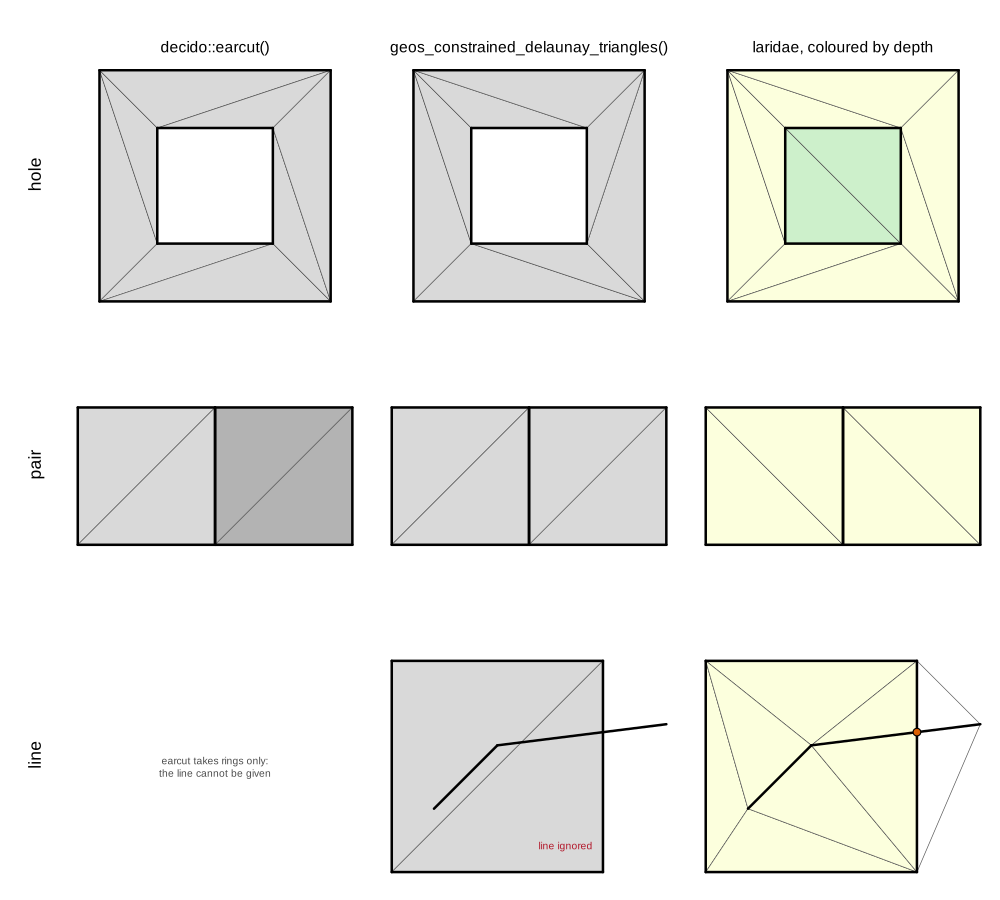
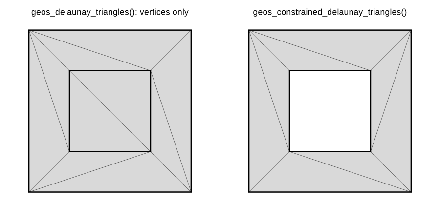
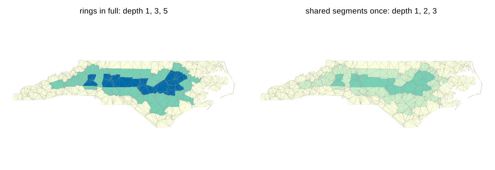
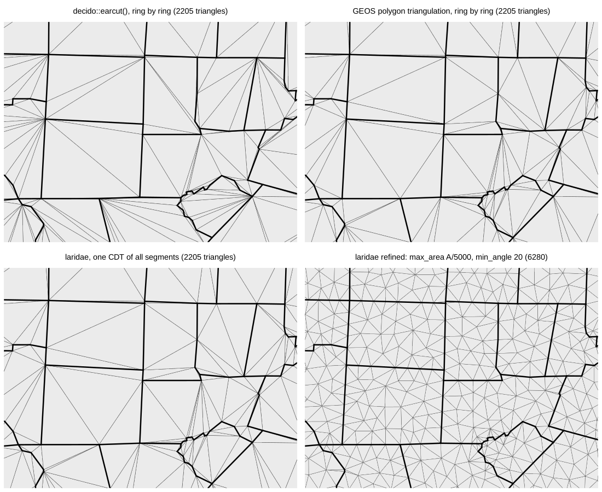
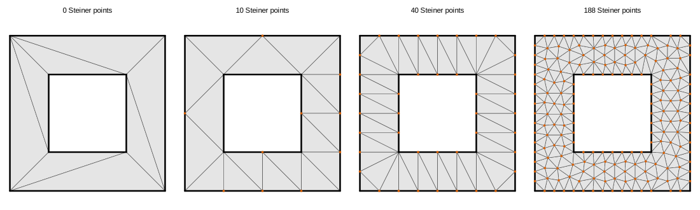
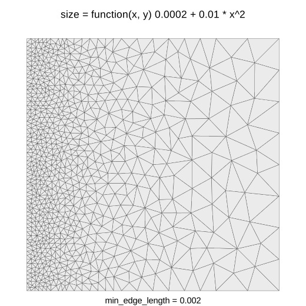

trianglewins / in context
Triangulation in context: earcut, GEOS, CGAL and the hypertidy stack
11 October 2026. Some background to the harness: why triangles turn up everywhere, what the common R routes (decido's earcut and the GEOS functions) do and do not promise, what silicate and anglr tried before, and why laridae is built on CGAL. The full list of packages is in the survey and the advice on picking one is in the guide. This page doesn't repeat either of them. It runs one set of small examples through three engines so the differences are easy to see.
All figures and numbers come from survey/context/figures.R,
run on laridae 0.1.0 (7495e75), cdtr 0.1.0, decido 0.4.1, geos 0.2.5
(GEOS 3.11.1), RTriangle 1.6-0.15 and R 4.3.3. The numbers are written
to survey/context/results.csv. The page uses the vocabulary
of On dimension: coordinates are xy, and a
value carried at a vertex is an attribute.
Why triangles
Triangles are the simplest shape that tiles any polygon, and a triangle can carry a linear function exactly. As a result, triangulation sits under a lot of everyday work:
- Drawing. GPUs draw triangles and nothing else, so every filled map polygon in rgl, deck.gl, WebGL or a game engine is triangulated first. This job wants speed and no new vertices. Triangle shape doesn't matter.
- Surfaces and terrain. TINs from LiDAR or a height grid, and 2.5D meshes where z rides along on triangles built in xy (lidR, lasR, terrainmeshr, anglr).
- Interpolation. Linear interpolation of scattered data inside each triangle, or natural neighbour methods (interp, akima; see Interpolation on triangles).
- Neighbours and Voronoi. Delaunay edges give a neighbour graph, and Voronoi tiles are its dual (deldir, spatstat, and the Voronoi functions in sf, geos and terra).
- Finite elements and spatial statistics. PDE solvers and the SPDE approach to Gaussian random fields need well-shaped triangles whose size is under control (fmesher behind INLA, inlabru and sdmTMB; fdaPDE; tulpaMesh).
- Ocean, coastal and climate models. Unstructured meshes (the UGRID convention; FESOM, ADCIRC, SCHISM, D-Flow FM) follow coastlines and get finer where the physics needs it.
- Computational geometry. Areas, sampling points uniformly in a polygon (pick a triangle weighted by area, then a point inside it), alpha shapes and concave hulls, skeletons, and reprojecting or texturing a raster onto another projection or a globe by interpolating across a mesh.
- Discrete global grids. Icosahedral and HEALPix grids are meshes on the sphere.
These jobs need different guarantees. Some need no new vertices, some need every input edge kept, some need good angles, some need a size that varies over the domain, and some need to edit the mesh after it is built. So "triangulate" names several problems, and the packages differ much more in what they promise than in how fast they are.
A few words
- PSLG (planar straight line graph): vertices plus
segments, with each segment given as a pair of vertex indices. Polygons,
lines and points are all PSLGs; a polygon ring is a closed chain of
segments. This is the input that cdtr, trowel and laridae share:
x,y,s0,s1. - Delaunay: a triangulation of points in which no point lies inside any triangle's circumcircle. Constrained Delaunay (CDT): the segments are forced to be edges, and the rest is as Delaunay as possible. Conforming Delaunay: segments are split until every piece is a true Delaunay edge.
- Steiner points: vertices that the algorithm adds.
laridae and cdtr label each vertex with an
origin:input,crossing(where two input segments cross) orsteiner(added by refinement). - Refinement (Ruppert, Chew): adding Steiner points until every triangle meets a minimum angle and a maximum area.
- Depth: the number of constraint crossings on the way in from outside to a triangle. For nested rings, odd depth is inside and even depth is a hole. Depth also works for a coverage of polygons with shared edges, where parity rules and hole seed points do not.
One shape, three triangulators
Here are three inputs: a square with a square hole, two squares sharing an edge, and the square with a polyline that leaves it. Each goes through decido's earcut, GEOS's polygon triangulation and laridae. Thick lines are the input; the orange dot is a crossing vertex.

Ear cutting (decido).
decido::earcut(xy, holes = 5): holes gives the
1-based row where each hole ring starts. The result is a vector of
vertex indices into your own coordinates, three per triangle. No vertex
is added and nothing is copied. decido vendors Mapbox's earcut.hpp (MIT,
no dependencies) and is very fast. It takes one polygon (a shell plus
its holes) per call. That is why the two squares are two calls (shaded
differently), and why their common edge is a coincidence of coordinates
rather than shared topology. A line or a loose point cannot be given at
all. Ear cutting makes no promise about triangle shape and is not
Delaunay. On the North Carolina counties below, 38.3% of earcut's
triangles have an angle under 10 degrees, and some are degenerate
(minimum angle 0), because collinear vertices on a ring become flat
ears. decido grew out of rearcut (earcut.js in V8). It is what
silicate's TRI() and TRI0() and anglr's TRI
use, and raybevel and rayvertex use it for extruded and roof models.
GEOS (geos, sf, terra, gdalraster). GEOS has two functions that are easy to confuse:

geos_delaunay_triangles()triangulates the vertices of any geometry, ignoring its edges. On the square with a hole it returns 10 triangles that fill the hole and pay no attention to the rings.geos_constrained_delaunay_triangles()(GEOS 3.10 or later) is a polygon triangulation. GEOS documents it as ear clipping, with holes joined to the shell, followed by edge flips towards Delaunay. It returns 8 triangles for the square with a hole. It adds no Steiner points and does no refinement, it accepts only polygons, and it handles each polygon on its own. Given the square and the polyline as one geometry collection, it returned the 2 triangles of the square on its own: the line is dropped.
The result is geometry (a GEOMETRYCOLLECTION of triangle POLYGONs),
not an index. To get a mesh back, the script reads the coordinates with
wk::wk_coords() and matches them exactly to rebuild a
shared vertex table. That works here because GEOS copies input
coordinates unchanged, but vertex identity is recovered by exact
floating-point equality, which is the weakest way to know two vertices
are the same. The same GEOS code is reached through
sf::st_triangulate() and
sf::st_triangulate_constrained(),
terra::delaunay() (with constrained = TRUE)
and gdalraster::g_delaunay_triangulation(), which goes
through GDAL's OGR layer, so the GEOS version is the one GDAL was built
with. That makes four interfaces to one engine.
rgeos::gDelaunayTriangulation() was the first; it left CRAN
in 2023.
laridae (CGAL). One call each, with the same
function: lari_new(x, y, s0, s1). In the figure, triangles
are coloured by depth, with the convex hull kept
(erase = "hull") so every triangle is visible:
- hole: 8 triangles at depth 1 and 2 at depth 2 (the hole).
Inside and outside come from depth, not from ring orientation or seed
points:
erase = "holes"keeps odd depth,"outer"keeps depth > 0. - pair: both rings given in full, so the shared edge appears
twice in the input. It is one mesh edge in the output, with
count = 2inlari_segments(), and that table also says which input segment each mesh edge came from. - line: the polyline is kept as constraint edges. Where it
crosses the square, a vertex is inserted (x = 1, y = 0.6625) with
origin = "crossing". Its attribute z = x + 2y is interpolated as 2.325, which is exact.
| decido::earcut | GEOS polygon triangulation | laridae | |
|---|---|---|---|
| input | one polygon: shell and holes | polygons | any PSLG: points, lines, rings |
| loose segments and points | no | no (lines dropped) | yes |
| crossing segments | not valid input | not valid input | crossing vertex inserted |
| edges shared between polygons | per polygon | per polygon | one mesh edge, with count |
| inside and outside | ring nesting | ring nesting | depth |
| new vertices | never | never | crossings, and Steiner points on request |
| angle, area and sizing control | no | no | yes |
| output | index into your vertices | triangle polygons | vertex, triangle and segment tables |
| edit after building | no | no | yes |
| licence | ISC (earcut), MIT (decido) | LGPL (GEOS), MIT (geos) | GPL-3 (CGAL Mesh_2) |
earcut and GEOS are the right tools for drawing and for quick per-polygon jobs, and they are far lighter to install. laridae is for when the segments matter: they have to be kept exactly, shared, allowed to cross, traced back to their input, refined around, or edited.
North Carolina as a coverage
The harness's nc_rings case holds sf's 100 North
Carolina counties as 108 rings given in full: 2421 vertices and 2421
segments, with every shared boundary appearing twice. The
nc case is the same data with exact duplicate vertices and
segments removed: 1255 vertices and 1357 segments. Both use longitude
and latitude as stored.

laridae counts an edge covered by k input segments k times. With the
rings in full, depth is 1, 3 and 5 (1205, 707 and 293 triangles); with
shared segments once it is 1, 2 and 3 (the same counts). Either way,
every county triangle has depth > 0, so erase = "outer"
keeps the whole state. For a coverage, depth measures distance from the
state boundary in shared-edge crossings. A parity rule would punch holes
in it. A per-polygon method avoids that, but only because it never sees
the coverage as one mesh.
Running the same rings through earcut ring by ring, GEOS ring by ring, and laridae as one CDT of all the segments gives the following:
| triangles | min angle (min, 5%, median), degrees | under 10 degrees | |
|---|---|---|---|
| decido::earcut, per ring | 2205 | 0, 1.22, 13.42 | 38.3% |
| GEOS polygon triangulation, per ring | 2205 | 0.77, 5.62, 20.32 | 15.1% |
| laridae CDT, no refinement | 2205 | 0.77, 5.62, 20.32 | 15.1% |

The GEOS triangles are identical to laridae's CDT, as sets of triangles, while only 32% of earcut's triangles appear in it. That is the expected result rather than a coincidence. For valid polygons that do not overlap, a constrained Delaunay triangulation of each polygon is the CDT of the whole, and GEOS's flips get it there. The difference between them is not the triangles. It is everything around them: GEOS needs valid polygons, works one polygon at a time, hands back geometry, and stops there. laridae accepts any segment set, returns one mesh with shared vertices and provenance, and can go on to refine and edit it.
Refined with the harness's real-data setting (maximum area of the
bounding box area / 5000, minimum angle 20 degrees), the three
Ruppert-style engines give laridae 6280 triangles, cdtr 6525 and
RTriangle 6047. All of them keep every segment; see the benchmark and inst/results/results.md
for the measured comparison. After that refine, adding one short
constraint to the laridae handle and refining again inserted 5 Steiner
points around the edit and left the rest of the mesh alone.
What came before in R
This work started around 2017 with a simple need: triangles that
respect every edge of real spatial data, including coverages with shared
boundaries and lines and polygons together, from a package with a free
licence. The discussion is in r-spatial/discuss#6.
The first laridae (2017 to 2022, Rcpp over the cgal4h and cgalh header
packages, with point triangulation and segment insertion) was the first
attempt at it with CGAL; it is kept on the legacy-rcpp
branch. Its README already gave the reason for wanting CGAL: being able
to update a triangulation, add segments to a point triangulation, and
work at the level of shared edges.
- RTriangle (Shewchuk's Triangle, packaged by David Sterratt and split out of retistruct) is the reference Ruppert/Chew mesher, fast and excellent. Its licence forbids commercial use, and that clause carries over to every package built on it.
- sfdct (hypertidy, archived from CRAN) gave sf users constrained Delaunay via RTriangle.
- silicate (CRAN; 0.7.2 accepted October 2026)
brought in the relational model. Geometry is normalised into tables
(vertices, segments or edges, paths or triangles, objects) with a shared
vertex pool. The models (SC, SC0, PATH, PATH0, ARC, TRI, TRI0) are
different normal forms of the same data, and the
sc_*verbs work across all of them. TRI and TRI0 triangulate with decido, polygon by polygon. - anglr (GitHub and r-universe, archived from CRAN)
built 3D and mesh models on silicate. DEL and DEL0 are constrained
Delaunay models via RTriangle, with
max_area; QUAD handles rasters;as.mesh3d()andplot3d()go to rgl. Itstriangulatoroption can now use cdtr.
Between them, these established what the current engines provide as a contract:
- geometry as tables, not lists of coordinate matrices;
- a shared vertex pool, so the shared boundaries of a coverage really are shared;
- provenance, meaning which input feature and segment each output piece came from;
- one triangulation of all features together, with inside and outside decided topologically (depth) rather than one triangulation per polygon;
- refinement without a non-commercial clause, which Triangle could not give.
silicate's models and verbs remain the abstraction worth keeping;
what changes is the machinery underneath. The engines now are cdtr
(artem-ogre/CDT, header-only, MPL-2.0), the lightweight default; laridae
(CGAL), the full-contract engine; and trowel (spade, in Rust), a third
live handle. All three take and return the same tables, and this harness
judges them. Those tables are the triangle form of the hypertidy mesh
spec v0.1: input vertices first, origin,
counter-clockwise triangles, 1-based rows in R, and depth counted per
copy.
Why CGAL
Exact decisions. A triangulation rests on two
questions: which side of a line a point is on (orientation), and whether
a point is inside a circle (in-circle). In floating point these can give
inconsistent answers for nearly collinear or nearly cocircular points,
and an inconsistent triangulation can loop, crash or overlap itself.
CGAL answers them exactly using filtering: fast floating point first,
and exact arithmetic only when the filter cannot decide. laridae uses
the Exact_predicates_inexact_constructions_kernel (Epick),
which makes every decision exactly but stores new points in floating
point, so GMP is not needed. The cost is stated in laridae's plan: a
constructed point, such as a Steiner point on a convex-hull edge, can
sit about 1e-10 off the exact line, and laridae handles that explicitly
with hidden hull constraints.
A data structure that remembers the input.
Constrained_triangulation_plus_2 keeps a hierarchy of
constraints: each input segment is remembered after crossings split it
into several edges. That hierarchy is where laridae's
segment and count columns (the map from
constraints back to input) come from, and it is why
lari_remove_segments() can undo an insertion exactly.
Crossing constraints are resolved by inserting the intersection
(Exact_predicates_tag).
Fully dynamic. Points and constraints can be inserted and removed at any time, and vertex ids stay stable. Nothing on CRAN offers an editable triangulation, and refining again after a small edit is local (above: 5 new vertices).
A complete mesher. Delaunay_mesher_2
(CGAL's 2D meshing package) does Ruppert/Shewchuk-style refinement with
angle and size criteria, seeds and step-by-step insertion. laridae
extends it with an edge-length floor and a sizing field, a local maximum
area given as a function of position or as a grid.


One practical note from making that figure. With only a sizing field,
the default edge-length floor comes from the segments (0.3 of the median
segment length, so 0.3 on the unit square). That floor stops refinement
at 32 triangles, and the report says all 32 still-bad triangles were
stopped by short edges. Setting min_edge_length = 0.002
gives the 1544 triangles shown. Attributes ride along through all of
this: refining the square with the polyline at z = x + 2y added 180
vertices, and the largest error in z was 4.4e-16.
An institution behind it. CGAL has been developed since the mid 1990s, starting as a European research project. Submissions are reviewed by an editorial board, every algorithm has a written specification, it is released regularly (the 6.x series now), and it is widely used in both research and industry. The same library has periodic and spherical triangulations, 3D Delaunay and constrained 3D triangulations, alpha shapes, straight skeletons, arrangements, Boolean operations on polygons and surface mesh processing. Those are directions laridae could take, not promises.
The costs, plainly.
- Licence. The 2D triangulation and meshing packages are GPL, with commercial licences sold by GeometryFactory. laridae is therefore GPL (>= 3), and cdtr exists partly so that there is a permissively licensed choice.
- Build. A heavy, header-only C++17 compile.
- CRAN. Stock CGAL headers write to
std::cerrandstd::coutand callabortandexit, whichR CMD checkreports as a compiled-code WARNING. RcppCGAL ships CGAL headers patched for R: output goes through R's console, aborts become R errors, and random numbers come from R's RNG. laridae usesLinkingTo: cpp11, Rcpp, RcppCGAL, BH, so no system CGAL is needed.
Choosing, briefly
- Drawing filled polygons: decido.
- Quick per-polygon triangles, or point Delaunay of spatial objects: the GEOS functions in geos, sf or terra.
- Point Delaunay and Voronoi: deldir.
- Meshes for SPDE models: fmesher.
- Meshing a general segment set with a permissive licence: cdtr (CRAN release in progress).
- The full contract (crossings, the constraint-to-input map, stable ids, editing, sizing fields, quality over a convex hull): laridae.
The long version, CRAN first, is in the guide.
References
- CGAL: https://www.cgal.org/; 2D Triangulations https://doc.cgal.org/latest/Triangulation_2/; 2D Conforming Triangulations and Meshes https://doc.cgal.org/latest/Mesh_2/
- RcppCGAL: https://CRAN.R-project.org/package=RcppCGAL
- Shewchuk, J. R. (1996). Triangle: engineering a 2D quality mesh generator and Delaunay triangulator. https://www.cs.cmu.edu/~quake/triangle.html
- Ruppert, J. (1995). A Delaunay refinement algorithm for quality 2-dimensional mesh generation. Journal of Algorithms 18(3), 548-585.
- Shewchuk, J. R. (1997). Adaptive precision floating-point arithmetic and fast robust geometric predicates. Discrete and Computational Geometry 18, 305-363.
- Mapbox earcut: https://github.com/mapbox/earcut; decido: https://CRAN.R-project.org/package=decido
- GEOS: https://libgeos.org/; geos: https://CRAN.R-project.org/package=geos
- silicate: https://CRAN.R-project.org/package=silicate; anglr: https://github.com/hypertidy/anglr; laridae: https://github.com/hypertidy/laridae; cdtr: https://github.com/hypertidy/cdtr; trowel: https://github.com/hypertidy/trowel